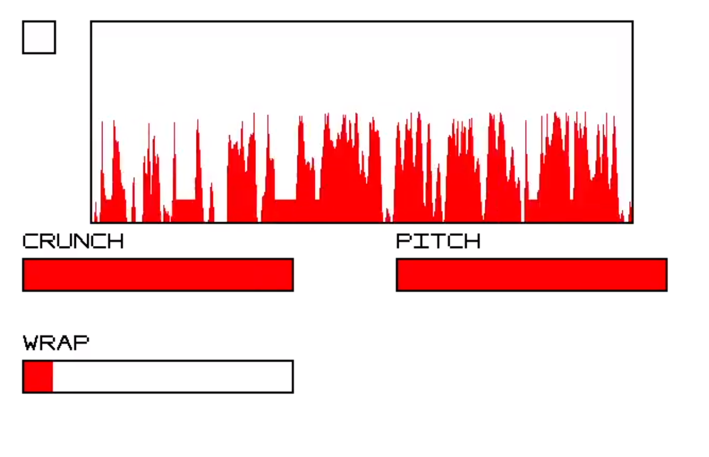
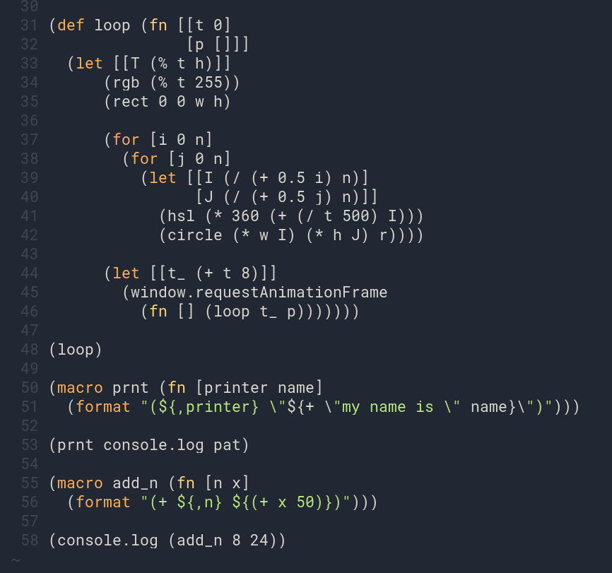
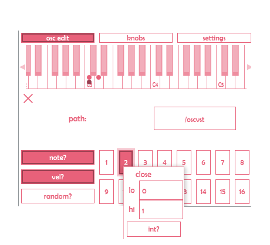
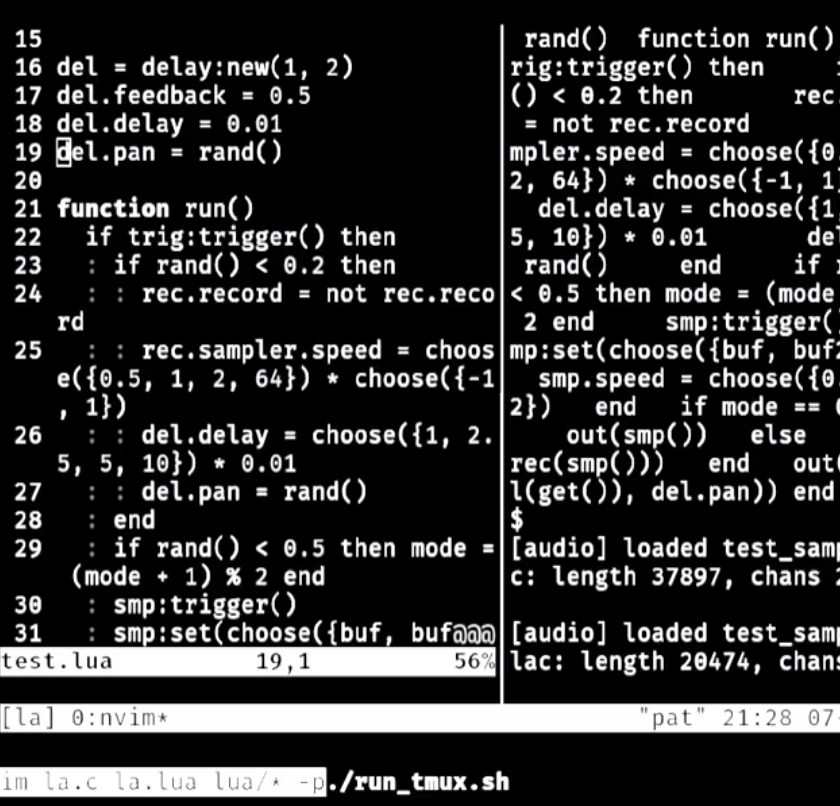
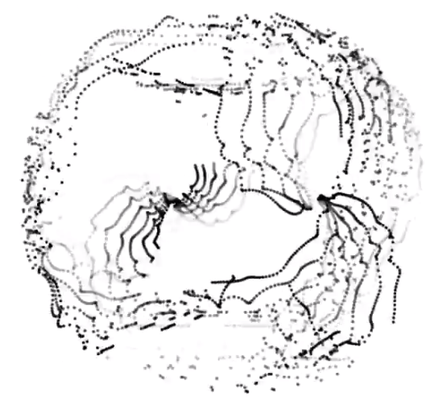
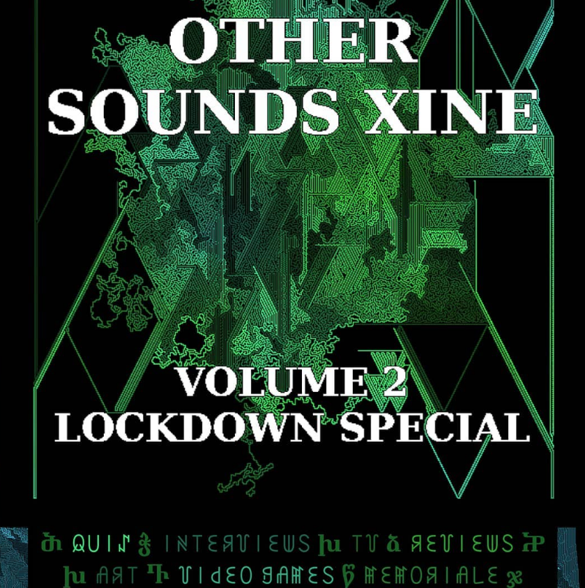
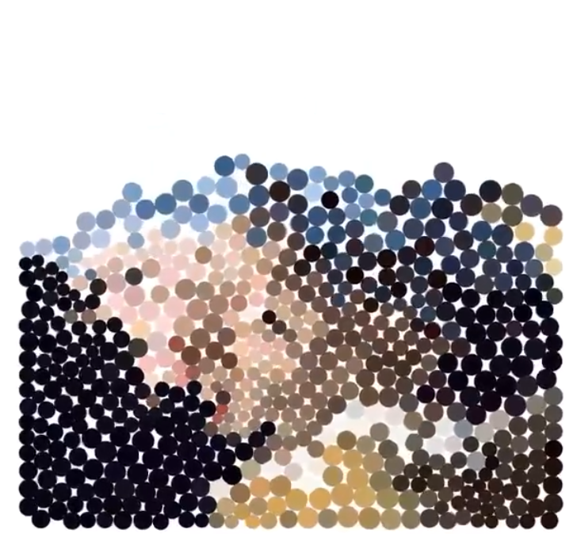
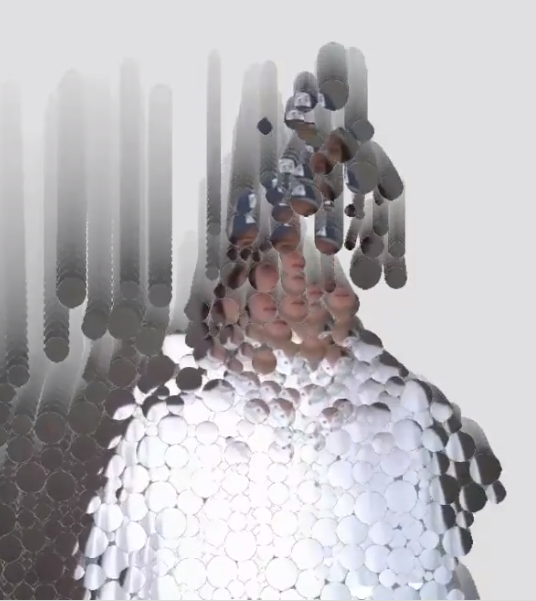

here lies a collection of art and code and code-art projects of my own
creation
code: get it here
-
compakt: This project is
an audio and gui library for quick prototyping of audio applications,
written entirely in C using SDL, Jack, and FFTW. I wanted to build a tool
that would allow me to create my own “instruments”, consisting of various
audio effects and controls. I implemented all of the audio algorithms from
scratch, including an FFT based pitch shifter, frequency scope, comb/delay
lines, and biquad filters

-
jisp: a Lisp-to-Javascript
transpiler, written entirely in Javascript. It uses a homemade variant of
Lisp, which includes: let bindings, macros, lambda functions, and globals.
Additionally, it has full Javascript interop (essential for this kind of
task). It is also very small, with around 300 sloc, and fast enough to be
used as a REPL

-
Oscvst: a VST3 plugin that
allows you to send OSC (Open Sound Control) messages from your DAW. It can
act as a midi keyboard (i.e, trigger a message whenever a note is pressed),
or as a set of VST parameters (i.e, send a message whenever an automation
parameter is changed). Oscvst can be used best when controlling a visual
application, as it allows you to perfectly sync specific events in the DAW
with the visual output. It was built using the JUCE C++ library

-
la/ca: la (lua audio) and ca (C audio) are two experiments with livecoding audio
on the audio thread. My desire was to get as close to the raw audio code as
possible, while still maintaining the “live” aspect of “livecoding”. Lua is
an interpreted language, and as such it is simple to hot reload the audio
function. However, C is a compiled language, so it is a lot trickier. The
solution was to hot reload a dynamic library that contains the audio
function, whilst making sure that any dynamic memory is stored in a global
“state” (which is preserved over reloads). Both of these projects included
various homemade DSP algorithms

art: get it here
-
dots spiral: I made
this audiovisual algorithmic composition for a livestream hosted by Test
Card (a Manchester-based audiovisual collective), using MaxMSP for the audio
and OpenFrameworks for the visuals. The audio used 20 randomly generated
16-step sequencers, each controlling various parameters. I would then send
OSC messages to control the visual program. The visuals used a particle
field which would flip between spherical coordinates and noise. Both the
audio and visuals included a “stutter” effect, which would loop over the
last second of input

-
Other Sounds xine cover: I produced the cover of a local underground music zine (produced by the
other sounds student group), using a space filling algorithm consisting of a
bunch of “worms” that collide with each other. When they collide, they can
return through their path in search of a new route. The algorithm also
allows you to load images (such as text), and the worms will treat the
outline of the image as a wall. It was made using p5js

-
pearl with a girl earring: This program converts an image into a grid of coloured circles. Each
circle is controlled by the physics engine (i.e, can collide with other
circles, and is affected by gravity). These circles are then manipulated
using physics, producing a similar and yet unexpected outcome. Using the
same system, I made
the mona with a pearl lisa, which drops the circles onto an uneven plane. Both were made with threejs

-
facefall: I have a
series of pieces using facial recognition and webcam input in
OpenFrameworks. facefall is my favourite of these, and uses a similar
approach to pearl with a girl earring: convert the input into physics
controlled balls. However with this piece, I use OpenCV to detect the
outline of a person, and then use Monte Carlo to spawn a new ball (whose
texture is extracted from its spawn position)
